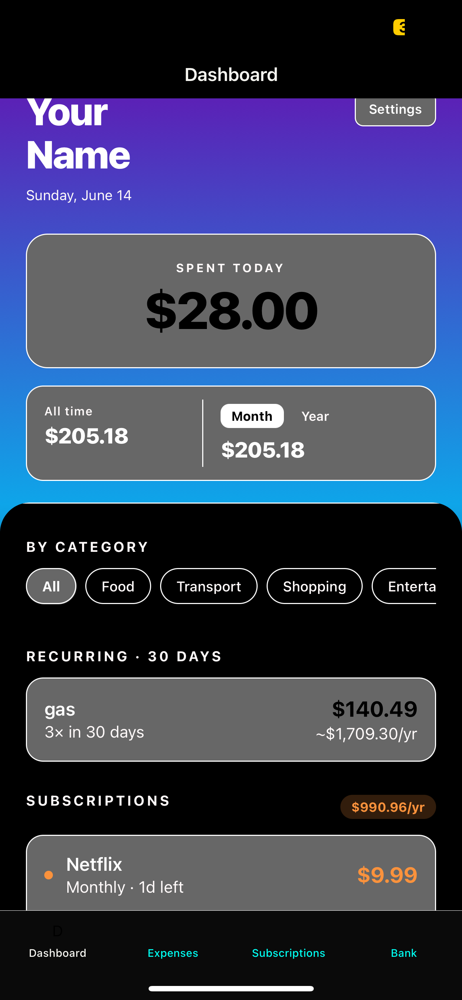
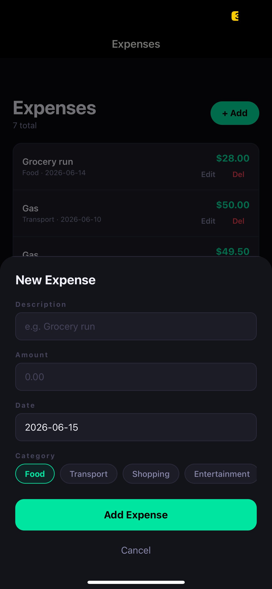
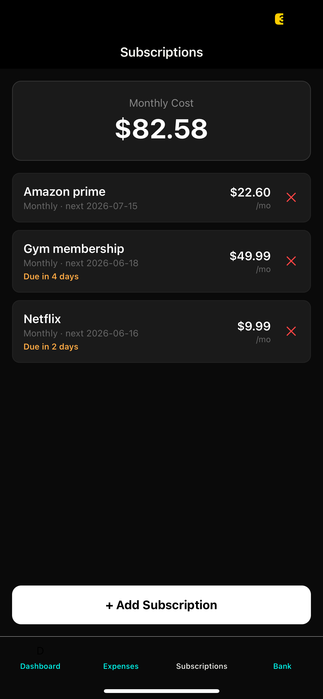

SEC EDGAR Financial Data Pipeline
An ETL pipeline that bulk downloads 10 years of SEC filing data, extracts it from 40 quarterly ZIP files, and loads it into MySQL.

Bulk downloading 40 quarters at once
The script pulls every quarterly ZIP from SEC EDGAR's archive(2014 Q1 through 2023 Q3) and downloads each one by one.

Extraction and renaming
Each ZIP contains 8 files. The pipeline extracts only num.txt and sub.txt, renames them per quarter ( e.g. 2019Q2_num.txt), and drops them into a clean output folder(60 files) which are then named and organized.

The financial_data table
After filtering for R&D, Net Income, and Revenue and cleaning the data, rows are loaded into the financial_data table in MySQL. Every spike calculation runs against this table. Each row ties a company to a specific metric, date, and dollar value.

Metadata table 40 quarters tracked
A companion metadata table logs every quarter ingested (source file, row count, load timestamp). One row per quarter, 40 total. Used to verify the pipeline ran cleanly without touching the main table.
R&D Expense Spikes Predict Short-Term Price Declines
An original quantitative thesis tested across 1,404 public companies. The finding: R&D expense spikes reliably precede short-term stock price drops, and the bigger the spike, the stronger the signal (up to a point).

Top 10 companies by spike percent
The first query ranks every company by their largest single-quarter R&D spike. The top 10 are dominated by micro-caps which are small absolute dollar changes that produce extreme percentages. The bucketing analysis accounts for this by grouping 100%+ outliers together.

Companies sorted into five bands
Companies are sorted by their average spike percentage into five buckets: 0–10%, 10–20%, 20–50%, 50–100%, and 100%+. Each bucket contains roughly 280 companies.

Drop rate climbs from 55.6% to 68.5% as spikes get larger
The core result: companies with small R&D spikes (0–10%) see prices drop 30 days later 55.6% of the time. As spike magnitude increases, that rate climbs peaking at 68.5% for 50–100% spikes before pulling back slightly at 100%+ likely where micro-cap outliers dilute the signal. A pattern that repeats across five independent groups of ~280 companies.

Running average per company over time
A running average of growth percentage per company using SQL window functions. Tracks whether a company's R&D behavior is getting more or less volatile over the 10-year window this is useful for spotting companies that are ramping up research spend consistently versus one-time spikes.
Personal Finance Tracker
A fully working mobile app running on Expo Go with a FastAPI backend. Built to actually use. It is a full CRUD, automatic subscription detection app, with spending summaries by day, month, and year.

Spending summary at a glance
The dashboard shows today's spending, this month's total, and an all-time breakdown by category. Everything updates the moment a new expense is added (no refresh needed).

Full CRUD on mobile
Add, edit, and delete expenses directly in the app. The FastAPI backend handles validation and persistence to SQLite. PUT and DELETE endpoints mean nothing is permanent (every entry is editable).

Auto-detected recurring charges
APScheduler runs in the background detecting recurring patterns in the expense history. Gas was flagged automatically because of its regular spending interval. Manual subscriptions show days until next charge, and the dashboard projects the total annualized cost across everything.

SQLite database with real data
The SQLite database holds both expenses and subscriptions tables. A screenshot of the raw DB showing the schema is clean and the data is real.
S&P 500 Anomaly Detection
Real-time anomaly detection across all 500 S&P constituents, with AI-generated explanations for each signal. The only project here with a live deployed URL, and the most complex stack by far.

500 stocks, filtered down to what matters
The React frontend shows every high-confidence anomaly which are flagged by both Z-Score and Isolation Forest using return Z-score, volume Z-score, signal type, and ticker. Searchable and filterable. The table updates each time the detection pipeline runs (not currently for the public it cost around 5 dollars per run).

Claude explains why it happened
Click any anomaly row and Claude AI generates a plain-language explanation of the likely cause, pulling context from recent news headlines fetched via NewsAPI.

Narrowing 500 stocks to one ticker
Type a ticker into the search bar and the table filters instantly. Useful for checking whether a specific stock has had any anomalous behavior in the last 90 days (30 days now to lower API costs).

Z-Score and Isolation Forest must agree
A day is only marked high-confidence when both models flag it independently. Z-Score catches statistical outliers in return and volume. Isolation Forest catches complex patterns Z-Score misses.